Chapter 14 · Design problem
Design YouTube
How to let millions of people upload and stream video: rent blob storage and a CDN, push every upload through a DAG-based transcoding pipeline, then tune the system for speed, safety and CDN cost.
TL;DR
- Scope: upload and watch videos on mobile, web and smart TV. 5M DAU, 30 min/day, many international users, videos up to 1 GB, encryption, cloud services allowed.
- Numbers: 5M × 10% × 300 MB = 150 TB of new video per day. CDN: 5M × 5 videos × 0.3 GB × $0.02 = $150,000 per day.
- Rent, don't build blob storage and the CDN. Clients stream from the nearest CDN edge; everything else goes through API servers.
- Upload = two parallel flows. Video: original storage → transcoding servers → transcoded storage → CDN, while a completion queue + handler update the metadata DB and cache. Metadata: client → API servers → DB and cache.
- Transcoding runs as a DAG of tasks: preprocessor → DAG scheduler → resource manager → task workers → encoded video.
- Optimize: GOP-chunked parallel uploads, upload centers near users, message queues between stages (speed); pre-signed URLs and DRM/AES/watermarks (safety); only popular videos on the CDN (cost).
- Errors: retry recoverable ones; stop and return an error code otherwise.
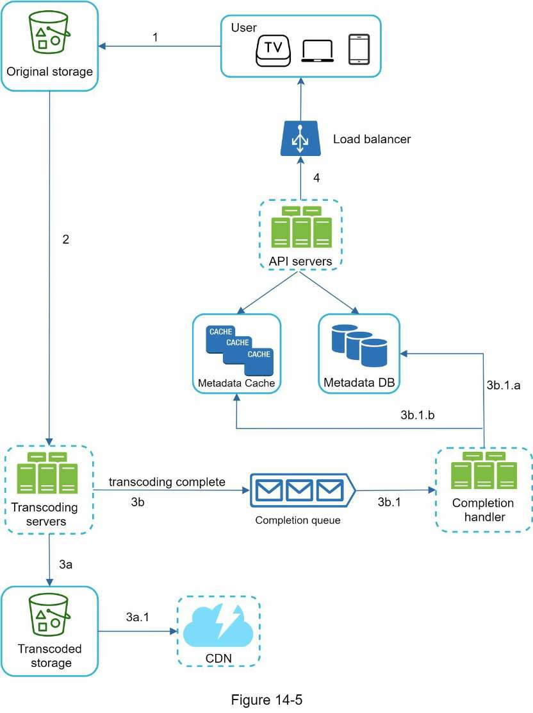
Interview answer skeleton
Scope it to upload + watch, put the CDN bill on the table early, then spend the deep dive on transcoding and optimizations.
- Clarify (≈5 min) Ask about features, clients, DAU, watch time, international users, formats, encryption, max file size, and whether cloud services are allowed. Estimate 150 TB/day of storage and $150k/day of CDN.
- High-level (≈10 min) Client / CDN / API servers. Draw the upload flow (original storage → transcoding → transcoded storage → CDN, plus completion queue → handler → metadata), the parallel metadata update, and streaming from the nearest CDN edge.
- Deep dive (≈20 min) Why transcode, container vs codec, the DAG model and its six-part pipeline. Then speed (GOP chunks, upload centers, message queues), safety (pre-signed URLs, DRM), cost (long tail) and error handling.
- Wrap up (≈5 min) Scale the stateless API tier and the database, how live streaming differs, and video takedowns.
Step 1Understand the problem and establish scope
Narrow YouTube down to upload and watch, then size it. The CDN bill is the number that shapes the rest of the design.
The same design works for Netflix or Hulu. YouTube looks simple, but a lot of technology sits underneath. Its 2020 numbers:
Enormous, global and profitable. It also has comments, shares, likes, playlists and subscriptions; you can't design all that in 45–60 minutes, so narrow the scope.
| You ask | Interviewer says |
|---|---|
| What features are important? | Uploading a video and watching a video. |
| What clients do we need to support? | Mobile apps, web browsers and smart TV. |
| How many daily active users? | 5 million. |
| Average daily time spent on the product? | 30 minutes. |
| Do we need to support international users? | Yes, a large percentage of users are international. |
| What video resolutions are supported? | The system accepts most video resolutions and formats. |
| Is encryption required? | Yes. |
| Any file size requirement? | The platform focuses on small and medium-sized videos. The maximum allowed size is 1 GB. |
| Can we use existing cloud infrastructure from Amazon, Google or Microsoft? | Great question. Building everything from scratch is unrealistic for most companies, so leveraging existing cloud services is recommended. |
Requirements
- Upload videos fast
- Smooth video streaming
- Ability to change video quality
- Low infrastructure cost
- High availability, scalability and reliability
- Clients: mobile apps, web browser and smart TV
Back-of-the-envelope estimation
Assumptions (confirm them with the interviewer): 5 million DAU, each watching 5 videos/day; 10% of users upload 1 video/day; average video size 300 MB.
CDN cost. A cloud CDN bills for data transferred out of it. Use Amazon CloudFront prices (Figure 14-2, below), assume 100% of traffic is served from the United States at an average $0.02 per GB, and count only video streaming. The result, $150,000 per day, is substantial even though providers discount heavily for big customers. The deep dive shows how to cut it.
Derived: that is 25 million views/day (≈290/s) and 7.5 PB out of the CDN daily, roughly $55 million a year. At that volume almost all traffic falls in the cheapest US tier ("Over 5PB"), which is where $0.02 comes from.
Figure 14-2 · CloudFront on-demand pricing for data transfer to the internet (per GB). The rate falls as monthly volume grows.
| Per month | US & Canada | Europe & Israel | South Africa & Middle East | South America | Japan | Australia | Singapore, S. Korea, Taiwan, Hong Kong & Philippines | India |
|---|---|---|---|---|---|---|---|---|
| First 10TB | $0.085 | $0.085 | $0.110 | $0.110 | $0.114 | $0.114 | $0.140 | $0.170 |
| Next 40TB | $0.080 | $0.080 | $0.105 | $0.105 | $0.089 | $0.098 | $0.135 | $0.130 |
| Next 100TB | $0.060 | $0.060 | $0.090 | $0.090 | $0.086 | $0.094 | $0.120 | $0.110 |
| Next 350TB | $0.040 | $0.040 | $0.080 | $0.080 | $0.084 | $0.092 | $0.100 | $0.100 |
| Next 524TB | $0.030 | $0.030 | $0.060 | $0.060 | $0.080 | $0.090 | $0.080 | $0.100 |
| Next 4PB | $0.025 | $0.025 | $0.050 | $0.050 | $0.070 | $0.085 | $0.070 | $0.100 |
| Over 5PB | $0.020 | $0.020 | $0.040 | $0.040 | $0.060 | $0.080 | $0.060 | $0.100 |
Step 2High-level design
Rent the hard parts (CDN and blob storage), then design two flows: uploading and streaming.
Why use cloud services instead of building them
- Interviews aren't about building everything from scratch. In limited time, choosing the right technology matters more than explaining how it works. "Blob storage for the source videos" is enough; designing the blob store is overkill.
- Scalable blob storage or a CDN is extremely complex and costly to build. Even large companies don't build everything: Netflix uses Amazon's cloud services and Facebook uses Akamai's CDN.
Three components
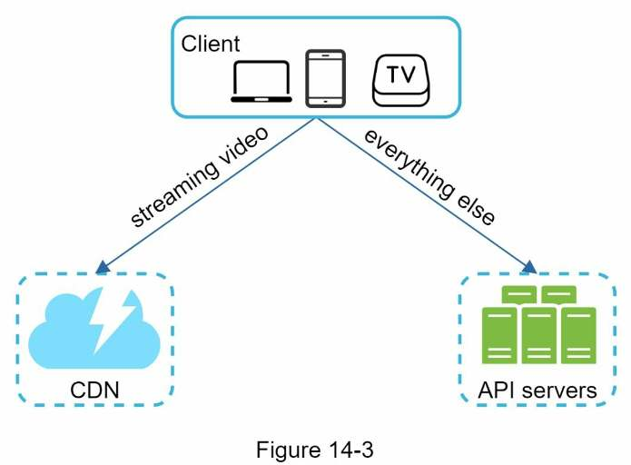
- Client: computer, mobile phone or smart TV.
- CDN: stores videos. When you press play, the video streams from the CDN.
- API servers: everything except video streaming: feed recommendation, generating video upload URLs, updating the metadata database and cache, user signup, etc.
The interviewer wants two flows: video uploading and video streaming.
Video uploading flow
The upload design (Figure 14-5) uses these components:
| Component | What it does |
|---|---|
| User, API servers | As above: the user's device, and the servers handling every request except streaming. |
| Load balancer | Spreads requests evenly across API servers. |
| Metadata DB | Stores video metadata. Sharded and replicated for performance and high availability. |
| Metadata cache | Caches video metadata and user objects for better performance. |
| Original storage | Blob storage for the original videos. A BLOB (Binary Large Object) is "a collection of binary data stored as a single entity in a database management system". |
| Transcoding servers | Run video transcoding, also called video encoding: converting a video into other formats (MPEG, HLS, etc.) that give the best possible streams for different devices and bandwidths. |
| Transcoded storage | Blob storage for the transcoded video files. |
| CDN | Caches videos and streams them on play. |
| Completion queue | A message queue holding "video transcoding complete" events. |
| Completion handler | A set of workers that pull events from the completion queue and update the metadata cache and database. |
(Strictly, HLS is a streaming protocol, not a video format.) Uploading runs as two processes in parallel: (a) upload the actual video, and (b) update the video metadata (video URL, size, resolution, format, user info, etc.).
Flow a · Upload the actual video
- The video is uploaded to original storage.
- Transcoding servers fetch the video from original storage and start transcoding.
- When transcoding completes, two branches run in parallel:
- 3a. Transcoded videos are sent to transcoded storage. 3a.1. From there they are distributed to the CDN.
- 3b. A transcoding-completion event is queued in the completion queue. 3b.1. The completion handler's workers continuously pull events from the queue. 3b.1.a / 3b.1.b. The handler updates the metadata DB and metadata cache.
- API servers tell the client the video is uploaded and ready for streaming.
Flow b · Update the metadata
While the file uploads to original storage, the client sends a parallel request with the video metadata (file name, size, format, etc.). The API servers write it to the metadata cache and database.
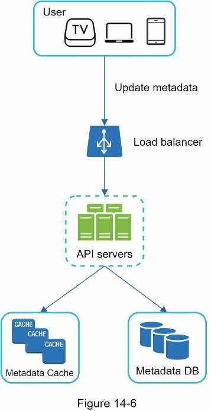
Video streaming flow
Downloading copies the whole video to your device. Streaming continuously receives it from the remote source a little at a time, so playback starts immediately and continues smoothly. A streaming protocol is a standardized way to control that data transfer. Popular ones:
| Protocol | What the name means |
|---|---|
| MPEG-DASH | MPEG = Moving Picture Experts Group; DASH = Dynamic Adaptive Streaming over HTTP |
| Apple HLS | HTTP Live Streaming |
| Microsoft Smooth Streaming | — |
| Adobe HDS | HTTP Dynamic Streaming |
The names are low-level details you needn't memorize. What matters: different protocols support different video encodings and playback players, so choose one that fits your use case. Videos stream directly from the CDN, delivered by the edge server closest to you, so latency is very low.
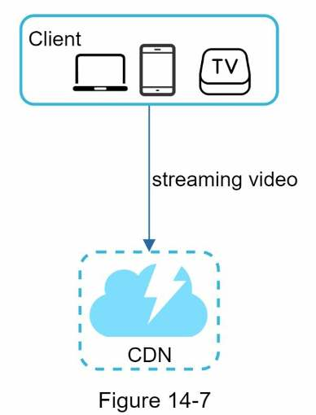
Step 3Design deep dive
Refine both flows: how transcoding works, then speed, safety and cost optimizations, then error handling.
Video transcoding
A phone or camera saves video in its own format. To play smoothly on other devices, it must be encoded into compatible bitrates and formats. Bitrate is the rate at which bits are processed over time: higher bitrate generally means higher quality, but needs more processing power and faster internet.
Why transcode
| Reason | Detail |
|---|---|
| Storage | Raw video is huge: an hour of high-definition video recorded at 60 frames per second can take a few hundred GB. |
| Compatibility | Many devices and browsers support only certain formats, so encode each video into several. |
| Quality vs bandwidth | Send higher resolution to high-bandwidth users and lower resolution to low-bandwidth users, keeping playback smooth. |
| Changing networks | Conditions change, especially on mobile. Switching quality automatically or manually keeps the video playing continuously. |
Encoding formats have two parts
| Part | What it is | Examples |
|---|---|---|
| Container | A "basket" holding the video file, audio and metadata. You can tell it from the file extension. | .avi, .mov, .mp4 |
| Codec | Compression and decompression algorithms that shrink the video while preserving its quality. | H.264, VP9, HEVC (the most used) |
Directed acyclic graph (DAG) model
Transcoding is computationally expensive and slow, and creators need different processing: some want watermarks, some supply their own thumbnails, some upload high-definition video and others don't.
To support different pipelines with high parallelism, add an abstraction and let client programmers define which tasks to execute. Facebook's streaming video engine uses a directed acyclic graph (DAG) programming model: tasks are defined in stages so they run sequentially or in parallel. We adopt a similar model.
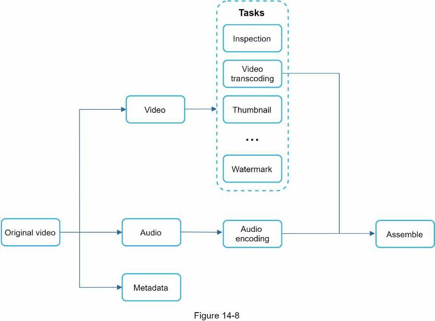
Tasks that can be applied to the video:
- Inspection: make sure the video has good quality and isn't malformed.
- Video encodings: convert it to support different resolutions, codecs, bitrates, etc. Figure 14-9's example outputs:
- Thumbnail: uploaded by the user or generated automatically by the system.
- Watermark: an image overlay on top of the video with identifying information about it.
Video transcoding architecture
Built on cloud services, it has six components: preprocessor, DAG scheduler, resource manager, task workers, temporary storage, and encoded video (the output).
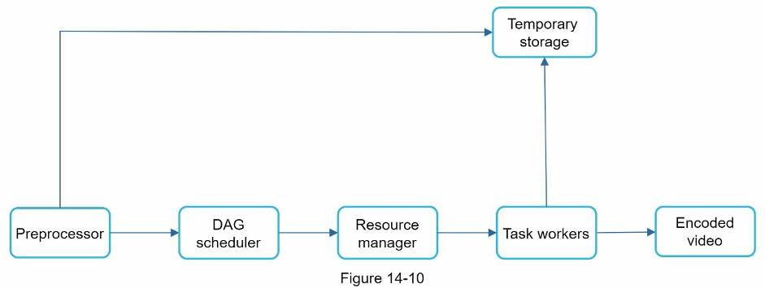
1 · Preprocessor
It has four responsibilities:
- Video splitting. The video stream is split (or split further) into smaller Group of Pictures (GOP) alignment. A GOP is a group of frames arranged in a specific order. Each chunk is an independently playable unit, usually a few seconds long.
- Splitting for old clients. Some old mobile devices or browsers can't split videos, so the preprocessor splits them by GOP alignment on their behalf.
- DAG generation. It generates the DAG from configuration files that client programmers write. For example, a simple DAG with 2 nodes and 1 edge,
Download → Transcode(Figure 14-12), comes from the two config files below (Figure 14-13). - Cache data. The preprocessor is a cache for segmented videos. For reliability, it stores GOPs and metadata in temporary storage, so if encoding fails the system can retry from the persisted data.
task {
name 'download-input'
type 'Download'
input {
url config.url
}
output { it->
context.inputVideo = it.file
}
next 'transcode'
}
task {
name 'transcode'
type 'Transcode'
input {
input context.inputVideo
config config.transConfig
}
output { it->
context.file = it.outputVideo
}
}Figure 14-13 (from Weibo's architecture) · next 'transcode' creates the edge; the download output context.inputVideo is the transcode input.
2 · DAG scheduler
It splits the DAG into stages of tasks and puts them in the resource manager's task queue.
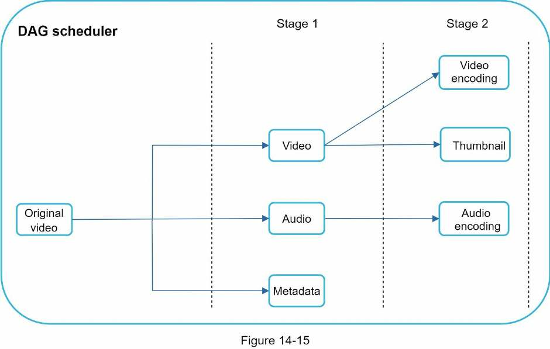
Stage 1 splits the original video into video, audio and metadata. In stage 2, the video gets two tasks (video encoding, thumbnail) and the audio gets audio encoding. (The book says "split into three stages", but the figure shows two stages; the three are stage 1's outputs.)
3 · Resource manager
Manages efficient resource allocation with three queues and a task scheduler:
| Part | Contents |
|---|---|
| Task queue | A priority queue of tasks to execute. |
| Worker queue | A priority queue of worker utilization info. |
| Running queue | Info about currently running tasks and the workers running them. |
| Task scheduler | Picks the optimal task/worker pair and tells the worker to run the job: |
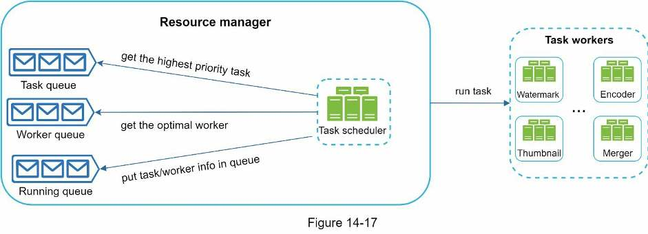
- The task scheduler gets the highest-priority task from the task queue.
- It gets the optimal task worker for that task from the worker queue.
- It instructs the chosen worker to run the task.
- It binds the task/worker info and puts it in the running queue.
- It removes the job from the running queue once the job is done.
4 · Task workers
They run the tasks defined in the DAG. Different workers run different tasks (Figure 14-19): watermark, encoder, thumbnail, merger, and more.
5 · Temporary storage
Several storage systems are used, chosen by data type, size, access frequency, life span, etc.
- Metadata is accessed often by workers and is usually small, so cache it in memory.
- Video and audio data go in blob storage.
Data in temporary storage is freed once the corresponding video processing is complete.
6 · Encoded video
The final output of the encoding pipeline, for example funny_720p.mp4.
Speed optimizations
Parallelize video uploading
Uploading a video as one unit is inefficient. Split it into chunks by GOP alignment, which allows fast resumable uploads when a previous upload failed. Doing the split on the client improves upload speed.
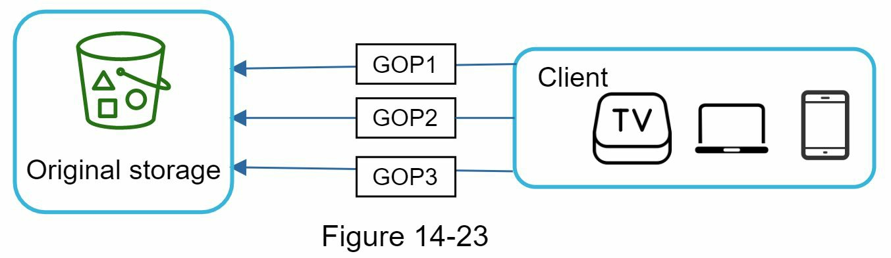
Place upload centers close to users
Set up multiple upload centers across the globe. People in the United States upload to the North America center; people in China upload to the Asian center. Use the CDN as the upload centers.
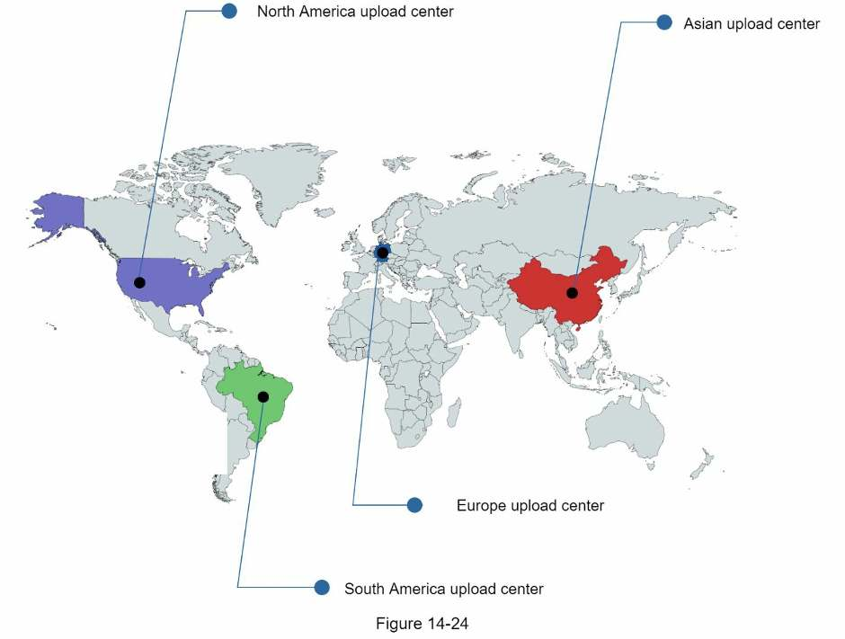
Parallelism everywhere
Low latency takes serious effort; build a loosely coupled system with high parallelism. A video moves from original storage → download module → encoding module → upload module → encoded storage → CDN. Each step depends on the previous step's output, which makes parallelism difficult.
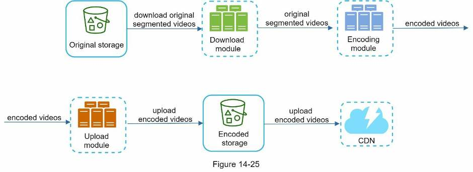
Introduce message queues between the modules:
| Encoding module behavior | |
|---|---|
| Before the message queue | Must wait for the download module's output. |
| After the message queue | Doesn't wait. Whenever there are events in the message queue, it executes those jobs in parallel. |
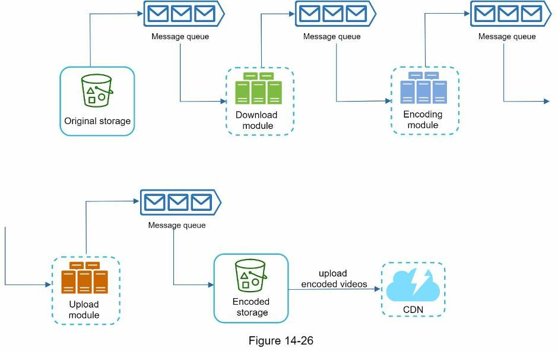
Safety optimizations
Pre-signed upload URL
To ensure only authorized users upload videos, to the right location, use pre-signed URLs:
- The client makes an HTTP request to the API servers (
POST /upload) to fetch a pre-signed URL. The URL grants access permission to the object it identifies. - The API servers respond with the pre-signed URL.
- The client uploads the video to original storage using the pre-signed URL.
"Pre-signed URL" is Amazon S3's term; other providers name it differently. Microsoft Azure blob storage supports the same feature as a Shared Access Signature.
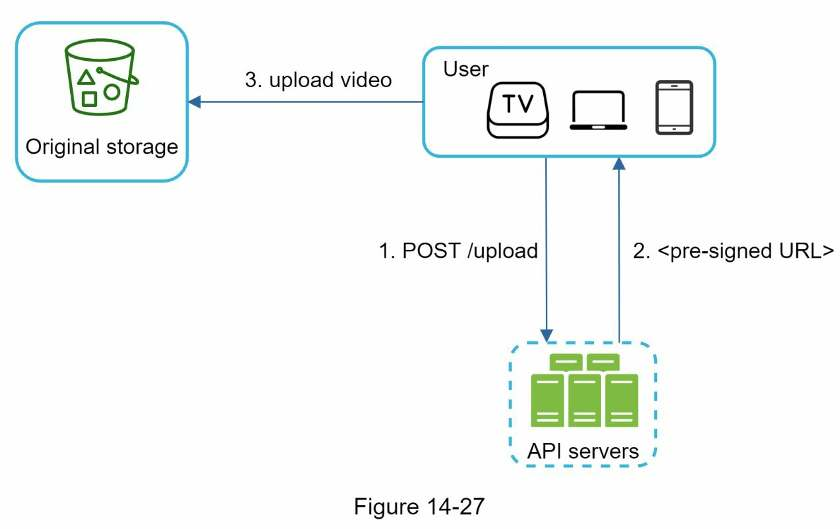
Protect your videos
Many creators won't post videos because they fear the originals will be stolen. To protect copyrighted videos, adopt one of three options:
| Option | How it works |
|---|---|
| Digital rights management (DRM) | Three major systems: Apple FairPlay, Google Widevine and Microsoft PlayReady. |
| AES encryption | Encrypt the video and configure an authorization policy. The video is decrypted on playback, so only authorized users can watch it. |
| Visual watermarking | An image overlay on the video with identifying information, such as your company logo or name. |
Cost-saving optimization
The CDN delivers fast worldwide but is expensive at large data sizes (≈$150,000/day in the estimate). Research shows YouTube streams follow a long-tail distribution: a few popular videos are accessed frequently, while many others have few or no viewers. So:
- Serve only the most popular videos from the CDN; serve the rest from your own high-capacity storage video servers.
- Store fewer encoded versions of less popular content. Short videos can be encoded on demand.
- Distribute regionally. Videos popular only in certain regions needn't go to other regions.
- Build your own CDN, like Netflix, and partner with Internet Service Providers (ISPs) such as Comcast, AT&T or Verizon. A giant project, but it can make sense for large streaming companies. ISPs are all around the world, close to users, so partnering improves the viewing experience and reduces bandwidth charges.
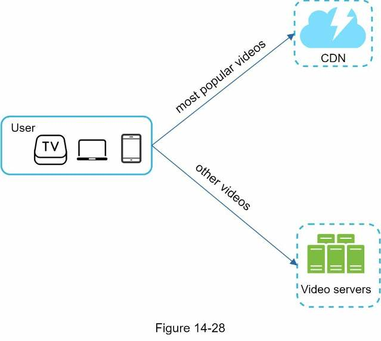
Error handling
At large scale, errors are unavoidable. A fault-tolerant system handles them gracefully and recovers fast. There are two types:
| Type | Example | Handling |
|---|---|---|
| Recoverable | A video segment fails to transcode | Retry a few times. If it keeps failing and the system judges it unrecoverable, return a proper error code to the client. |
| Non-recoverable | Malformed video format | Stop the running tasks for that video and return a proper error code to the client. |
Playbook: typical errors per component
| Error | Fix |
|---|---|
| Upload error | Retry a few times. |
| Split video error | If older clients can't split videos by GOP alignment, they pass the entire video to the server, and splitting is done server-side. |
| Transcoding error | Retry. |
| Preprocessor error | Regenerate the DAG diagram. |
| DAG scheduler error | Reschedule the task. |
| Resource manager queue down | Use a replica. |
| Task worker down | Retry the task on a new worker. |
| API server down | API servers are stateless, so requests are directed to a different API server. |
| Metadata cache server down | Data is replicated multiple times, so read from the other nodes. Bring up a new cache server to replace the dead one. |
| Metadata DB master down | Promote one of the slaves (replicas) to be the new master. |
| Metadata DB slave down | Use another slave for reads, and bring up a new database server to replace the dead one. |
Step 4Wrap up
With time left, show you can scale it further and know how live streaming and takedowns change things.
- Scale the API tier. API servers are stateless, so the API tier scales horizontally with ease.
- Scale the database. Talk about database replication and sharding.
- Live streaming: recording and broadcasting video in real time. This system isn't built for it, but both need uploading, encoding and streaming. Differences:
Aspect Live streaming vs this design Latency Stricter latency requirement, so it may need a different streaming protocol. Parallelism Lower requirement, because small chunks of data are already processed in real time. Error handling Needs a different set of error handling. Anything that takes too much time is unacceptable. - Video takedowns. Videos that violate copyrights, contain pornography, or involve other illegal acts must be removed. Some are caught by the system during upload; others are found through user flagging.
Self-test
What scope and constraints come out of the clarifying questions?
Upload and watch videos; mobile apps, web and smart TV; 5M DAU spending 30 min/day; many international users; most resolutions and formats accepted; encryption required; max video size 1 GB; existing cloud services may be used.
Estimate daily storage and daily CDN cost. Show the arithmetic.
Storage: 5M × 10% uploaders × 300 MB = 150 TB/day. CDN: 5M users × 5 videos × 0.3 GB × $0.02/GB (CloudFront, all US traffic, streaming only) = $150,000/day.
Which cloud services do you rent, why not build them, and what does each high-level component handle?
Rent a CDN and blob storage: they're extremely complex and costly to build, and interviews reward choosing the right tool (Netflix uses AWS, Facebook uses Akamai). The CDN serves video streams; API servers handle everything else (recommendations, upload URLs, metadata, signup).
Walk through uploading the actual video, step by step.
1) Upload to original storage. 2) Transcoding servers fetch and transcode it. 3a) Transcoded video goes to transcoded storage, then the CDN. 3b) A completion event goes to the completion queue; completion handler workers pull it and update the metadata DB and cache. 4) API servers tell the client it's ready to stream. In parallel, the client sends the metadata (file name, size, format) to API servers, which update the metadata cache and DB.
How is streaming different from downloading, and where do videos stream from?
Downloading copies the whole file first; streaming loads a little data at a time so playback starts immediately. Videos stream from the closest CDN edge server using a streaming protocol such as MPEG-DASH, Apple HLS, Microsoft Smooth Streaming or Adobe HDS.
Give four reasons to transcode videos.
Raw video is huge (an hour of HD at 60 fps can be hundreds of GB); devices and browsers support only certain formats; higher resolution should go to high-bandwidth users and lower to low-bandwidth users; and quality must switch as network conditions change.
What's the difference between a container and a codec?
A container (.avi, .mov, .mp4) is the "basket" holding the video, audio and metadata. A codec (H.264, VP9, HEVC) is the compression/decompression algorithm that shrinks the video while preserving quality.
Why model transcoding as a DAG, and what tasks might it contain?
Creators need different pipelines and transcoding is expensive, so client programmers define tasks in stages that run sequentially or in parallel (as in Facebook's video engine). Tasks: inspection, video encodings (360p to 4k), thumbnail, watermark, audio encoding, then assembly.
Name the six components of the transcoding architecture and the preprocessor's four jobs.
Preprocessor, DAG scheduler, resource manager, task workers, temporary storage, encoded video. The preprocessor splits video into GOPs, splits on behalf of old clients that can't, generates the DAG from config files, and caches GOPs and metadata in temporary storage for retries.
How does the resource manager schedule work?
The task scheduler takes the highest-priority task from the task queue, picks the optimal worker from the worker queue, tells that worker to run it, records the task/worker pair in the running queue, and removes it from the running queue when done.
What are the three speed optimizations?
Split uploads into GOP-aligned chunks on the client and upload them in parallel (also resumable); use CDN-based upload centers close to users; put message queues between modules so each processes events in parallel instead of waiting for the previous step.
How do you keep uploads and videos safe?
Uploads: the client calls POST /upload to get a pre-signed URL (S3 term; Azure calls it a Shared Access Signature) and uploads with it. Videos: DRM (Apple FairPlay, Google Widevine, Microsoft PlayReady), AES encryption with an authorization policy, or visual watermarking.
The CDN costs $150k/day. How do you cut it?
Exploit the long tail: serve only popular videos from the CDN and the rest from your own high-capacity video servers; keep fewer encoded versions of unpopular content and encode short videos on demand; distribute regionally popular videos only to their region; at large scale, build your own CDN and partner with ISPs.
Recoverable vs non-recoverable errors: how is each handled, and what if the metadata DB master dies?
Recoverable (a segment fails to transcode): retry a few times, then return an error code if it still fails. Non-recoverable (malformed format): stop the video's running tasks and return an error code. If the DB master dies, promote a replica (slave) to master.
How does live streaming differ from this design?
Both need uploading, encoding and streaming, but live streaming has a stricter latency requirement (maybe a different streaming protocol), a lower need for parallelism (small chunks are already processed in real time), and needs error handling that doesn't take long.
Terms to know
- Blob storage
- Storage for binary large objects (BLOBs): big binary files such as videos, stored as single entities.
- CDN edge server
- A content delivery network server close to the user; videos stream from the nearest one.
- Transcoding
- Also called encoding: converting a video into other formats, resolutions and bitrates for different devices and bandwidths.
- Bitrate
- The rate at which bits are processed over time. Higher bitrate generally means higher quality and more bandwidth.
- Container
- The file format holding video, audio and metadata, e.g.
.mp4,.mov,.avi. - Codec
- A compression/decompression algorithm for video, e.g. H.264, VP9, HEVC.
- GOP
- Group of Pictures: a chunk of frames in a specific order, independently playable, usually a few seconds long.
- DAG
- Directed acyclic graph: tasks and their dependencies, arranged in stages that run sequentially or in parallel.
- Streaming protocol
- A standardized way to control video data transfer, e.g. MPEG-DASH or Apple HLS.
- Pre-signed URL
- A URL that grants temporary permission to upload to a specific storage object (Azure: Shared Access Signature).
- DRM
- Digital rights management: systems such as FairPlay, Widevine and PlayReady that restrict playback to authorized users.
- Long-tail distribution
- A few items get most of the traffic while most items get little or none.
Book references (go deeper)
- YouTube by the numbers
- 2019 YouTube Demographics
- CloudFront Pricing
- Netflix on AWS
- Akamai homepage
- Binary large object
- Here's What You Need to Know About Streaming Protocols
- SVE: Distributed Video Processing at Facebook Scale
- Weibo video processing architecture (in Chinese)
- Delegate access with a shared access signature
- YouTube scalability talk by an early YouTube employee
- Understanding the characteristics of internet short video sharing: A YouTube-based measurement study
- Content Popularity for Open Connect